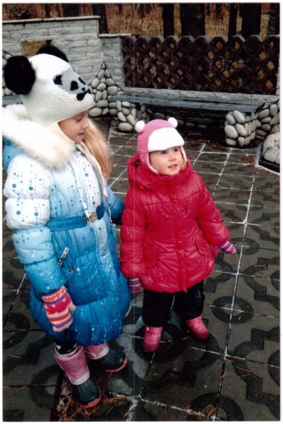
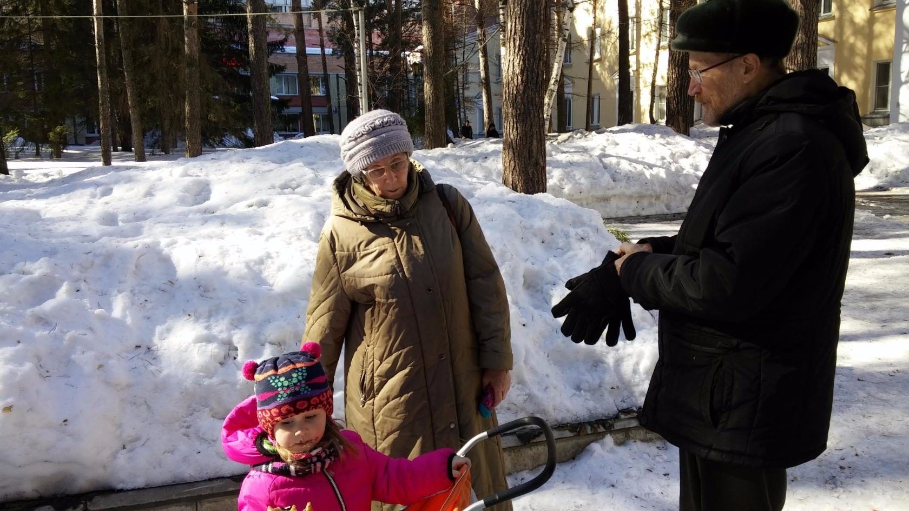

Бердск
После выхода на пенсию — переезд в Бердск. Продолжение преподавательской работы и репетиторства, новый сад, постоянные прогулки и поездки по окрестностям.

Любимым местом прогулок с внучками был курорт-отель «Сосновка» в посёлке Новый под Бердском.

